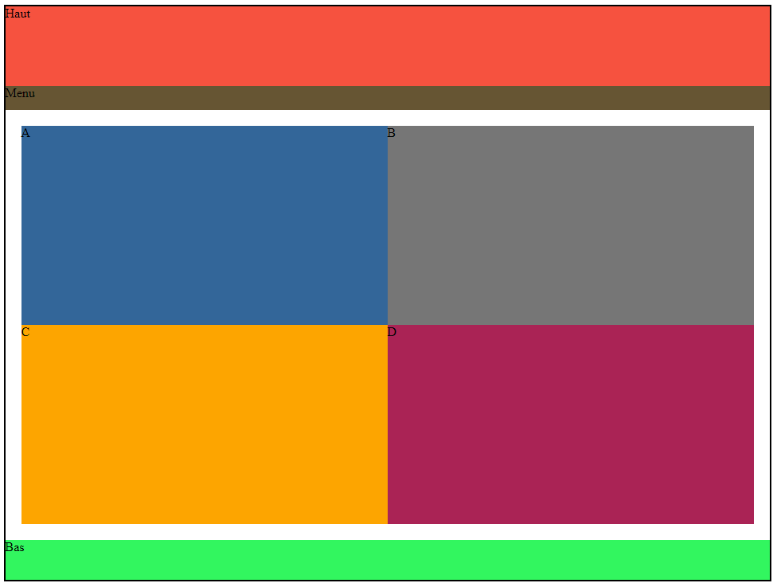
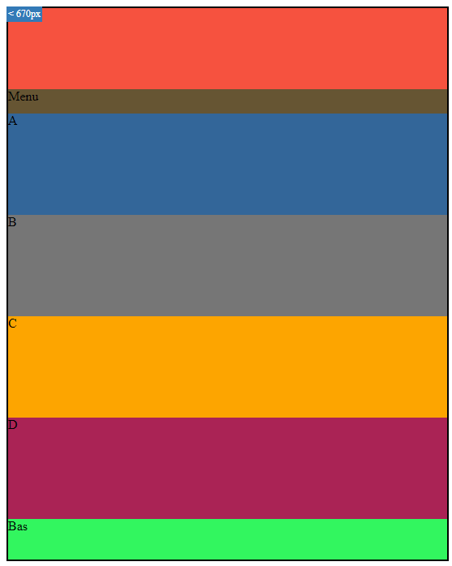
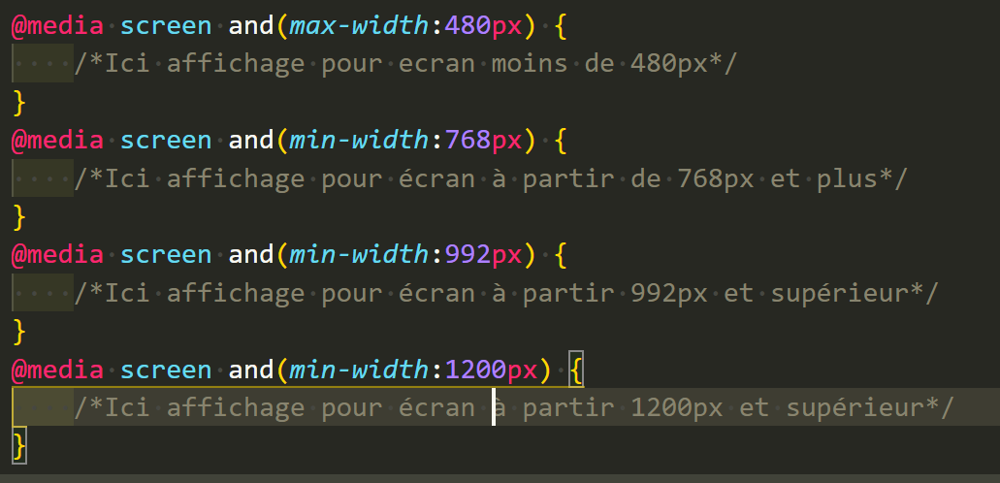

Le Responsive Web design
Le Responsive Web Desing est un ensemble de pratique permettant de visualiser de façon optimum une page web sur différent appareils ayant des tailles d'écran trés variées.Permet de pouvoir mettre notre site aussi bien sur téléphone mobile que sur tablette ou encore un écran de télèvision.Les appareils mobiles comme les télèphone mobile ou les tablettes possédent en outre une surface virtuelle nommée surface de rendu de l'appareil (device-widht).
Le viewport du navigateur: correspond à la surface de la fenêtre du navigateur.Cependant,sur mobile, la notion de fenêtre est différentes de celle d'un écran de bureau,il n'y a pas de cadre ni de barre prévu pour naviguer de maniére tactille.Toujours en fonction des navigateurs.
La balise meta viewport permet d'avoir un espace moins large correspondant plus à la taille physique de l'appareil, pour ce faire on déclare la correspondance dans une balise meta dédiée au viewport. Voir enssemble les différentes des propiétés disponible pour la balise meta name viewport content width(largeur).
Zoning ordinateur
Ici on a un zoning realiser pour un ecran d'ordinateur a sa droite vous pourrez voir le meme rendu mais version mobile
Zoning mobile(responsive)
Ici on a un zoning realiser pour un ecran mobile a sa gauche vous pourrez voir le meme rendu mais version ordinateur
Les Média Queries:
Maintenant que l'espace disponible dans le viewport du navigateur est celui du device-widht, il est nécessaire de faire en sorte que la page s'affiche correctement quelle que soit cette taille. On va utiliser pour cela les Média Queries. Il s'agit d'écrire des déclarations CSS en fonction de certains critères.La syntaxe est proche d'un test conditionelle de programmation.
Exemple pour cibler uniquement les appareils dont la largeur du viewport est inférieur à 480px :
Sur cette page un responsive a été fait ,lorsque la taille d'ecran se reduit a moins de 768px alors l'affichage change